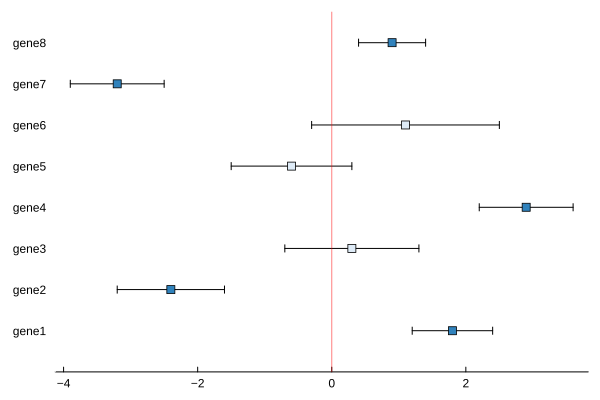
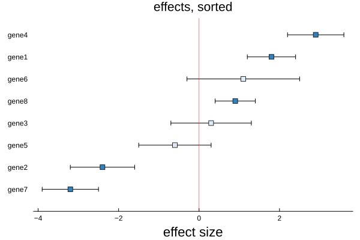
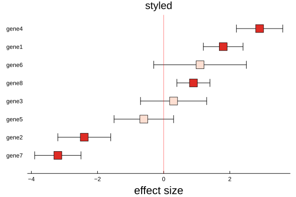

Confidence plot
The confidence plot draws an estimate for each of several variables as a point with a horizontal error bar, and a red line at zero. How far a point sits from the line is the size of the effect, the bar is its confidence interval, and whether the bar crosses zero is what marks the estimate as significant — the points whose interval clears zero are coloured apart from those whose interval still contains it.
plot_confidence(x, y, ε; kwargs...)It takes three vectors directly, so it is not tied to any model: the estimates, their labels, and the half-width of each interval. Anything that produces an estimate and a spread — a regression's coefficients, a set of effect sizes, a batch of group differences — can be drawn with it.
Setup
The confidence plot takes plain vectors rather than a fitted model, so we need only BigRiverPlots and Plots.
using BigRiverPlots
using PlotsAn example
Eight variables, each with an estimated effect and a confidence half-width. We arrange it so some intervals clear zero and some straddle it, since the split between the two is exactly what the plot is there to show.
x is the estimates, y their labels, and ε the half-width of each interval — so the bar runs from x - ε to x + ε.
x = [ 1.8, -2.4, 0.3, 2.9, -0.6, 1.1, -3.2, 0.9] # the estimates
y = ["gene1", "gene2", "gene3", "gene4",
"gene5", "gene6", "gene7", "gene8"] # the labels
ε = [ 0.6, 0.8, 1.0, 0.7, 0.9, 1.4, 0.7, 0.5] # the half-widths
# which intervals clear zero — the ones the plot will pick out
[(y[i], (x[i]-ε[i]) * (x[i]+ε[i]) > 0) for i in eachindex(x)]8-element Vector{Tuple{String, Bool}}:
("gene1", 1)
("gene2", 1)
("gene3", 0)
("gene4", 1)
("gene5", 0)
("gene6", 0)
("gene7", 1)
("gene8", 1)The default plot
Given the three vectors, we get one point per variable with its error bar, a red line at zero, and the points coloured by whether their interval clears the line. The variables run up the y axis in the order given.
plot_confidence(x, y, ε)
Modifying the plot
The recipe sets the significant colouring, the marker shape, and the zero line for itself, and forces the ones that make the plot legible — the legend off, the y axis stripped back. The rest is left as a default that yields to what we pass, so titles, labels, the marker, the canvas, and the standard Plots vocabulary are all available on top.
Naming the axes and ordering the effects
The axis labels are ours to set, and the figure reads best when the effects are sorted, so the largest and the smallest sit at the two ends rather than scattered. We sort the three vectors together and label the axes.
ord = sortperm(x)
plot_confidence(x[ord], y[ord], ε[ord];
xlabel = "effect size",
ylabel = "",
title = "effects, sorted")
Styling
Everything the recipe sets as a default yields to what we pass, so the marker, the canvas size, and the fonts are ours to change. Here we enlarge the markers, widen the canvas, and give the figure a title.
plot_confidence(x[ord], y[ord], ε[ord];
color = :Reds_3,
marker = 8,
xlabel = "effect size",
title = "styled")